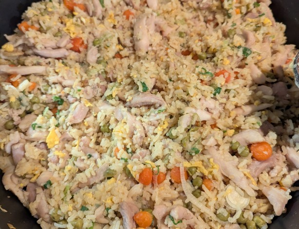

Sestavine
- 100g basmati riža
- Svež ingver
- Česen
- Šalotka
- 500g piščanca (file prsi ali BKK)
- Piščančja jušna kocka
- 1 srednje velik koren
- 30g graha iz konzerve
- Mlada čebula
- Sojina omaka
- Praženo sezamovo olje (opcijsko)
- 2 jajci
- Neutralno olje (npr. sončnično)
- MSG
Postopek
Riž
Riž pripravimo dan vnaprej, saj je tak riž bolj primeren za pečen riž. Če želimo riž isti dan, ga skuhamo z malo manj vode.
- Na tanke trakce narežemo ingver in česen.
- Operemo riž.
- Zavremo 1250ml vode.
- Raztopimo piščančjo jušno kocko.
- V vodo dodamo ingver in česen.
- V vodo damo riž in pokrijemo.
- Kuhamo približno 10-12 min, oz. dokler ne vpije vse vode. Med kuhanjem čim manj odpiramo pokrov, da se riž na vrhu kuha v pari. Riža med kuhanjem ne mešamo
- Kuhan riž ohladimo in pustimo čez noč, idealno razprostrt na pladnju, da se čim bolje posuši.
Piščanec
Piščanca bomo hitro marinirali in pasterizirali (na hitro skuhali v vreli vodi).
- Piščanca narežemo na tanke trakce. Tu želimo precej tanke trakce, da se bo piščanec dovolj hitro skuhal v vodi.
- V posodi zmešamo piščanca, sol, pecilni prašek, škrob, beljak enega jajca.
- Za 30 sekund do 1 min kuhamo piščanca v vreli vodi in ga vzamemo ven.
Priprava
- Nasekljamo šalotko, česen in korenje. Korenje na kockice približno v velikosti graha.
- Narežemo mlado čebulo.
- V posodi ubijemo in umešamo jajci. Od priprave piščanca nam bo ostalo eno celo jajce in en rumenjak.
Kuhanje
Pečen riž je idealno kuhati v voku. Če to ni mogoče, je ponev čisto ok. Pomembno je, da je posodba v kateri kuhamo zelo vroča, da malce zapeče riž.
- Segrejemo vok in dodamo olje.
- Dodamo šalotko in pražimo 10-20 sekund.
- Dodamo česen in pražimo še par sekund, oz da česen zadiši.
- Dodamo jajce in mešamo.
- Dodamo riž in zmešamo z vsem v voku.
- Dodamo še malce olja in malo mešamo.
- Dodamo še ostalo zelenjavo, sol in MSG.
- Dodamo piščanca.
- Dodamo sojino omako in sezamovo olje. To naredimo tako, da ju nalijemo po robu voka, da se najprej malce karamelizira.
- Postrežemo.